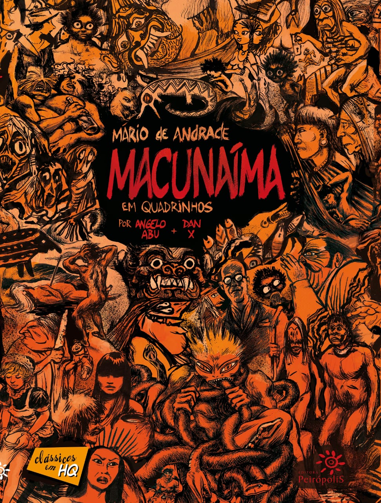

| Literatura classica Brasileira |  |
| Literatura classica Brasileira | |
Aqui, voce encontra as principais obras classicas da Literatura Brasilieira e suas respectivas informacoes.
| Capa | Nome | Autor | Ano de lançamento | Genero | Site para compra |
|---|---|---|---|---|---|
| Vidas Secas | Graciliano Ramos | 1938 | Romance|Ficção | Achou interessante? | |
 |
Memórias Póstumas de Brás Cuba | Machado de Assis | 1881 | Romance| Ficção | Achou interessante? |
| Capitães de Areia | Jorge Amado | 1937 | Romance|Ficção | Achou interessante? | |
| Quarto de Despejo | Carolina Maria de Jesus | 1960 | Biografia| Auto biografia | Achou interessante? | |
| Incidente em Antares | Érico Veríssimo | 1970 | Ficção distópica | Achou interessante? | |
 |
O Cortiço | Aluíso de Azevedo | 1890 | Romance| Literatura do naturalismo | Achou interessante? |
|  | Macunaíma | Mária de Andrade | 1928 | Romance|Ficção | Achou interessante? |
 |
O Quinze | Rachel de Queiroz | 1930 | Drama | Achou interessante? |
| Auto da Compadecida | Ariano Suassuna | 1955 | Comedia dramatica | Achou interessante? |